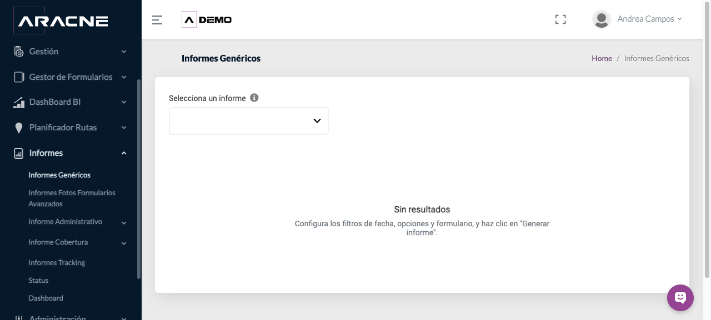

Consulta
Informes operativos
Generar Informes Genéricos, consultar fotos de Formularios Avanzados y revisar Tracking.
Requisitos
Periodo, formulario y usuario disponibles para los filtros.
Dónde estáInformes
Procedimiento
- En Informes Genéricos, selecciona un informe y configura fecha, opciones y formulario.

Paso 1. Selección y generación de Informes Genéricos. - Pulsa Generar informe y revisa el resultado.
Paso 2. Selección y generación de Informes Genéricos. - En Fotos de Formularios Avanzados, define Fecha Desde y Fecha Hasta.

Paso 3. Filtros de Fotos de Formularios Avanzados. - Elige Solo con respuestas o Todos los campos, y filtra por formulario y usuario.
Paso 4. Filtros de Fotos de Formularios Avanzados. - Genera el informe de fotos.
Paso 5. Filtros de Fotos de Formularios Avanzados. - En Tracking, selecciona fecha desde, fecha hasta y usuario; pulsa Buscar.

Paso 6. Filtros de fecha y usuario en Tracking.
Campos y controles
- Intervalo de fechas: periodo incluido.
- Solo con respuestas/Todos los campos: alcance del informe fotográfico.
- Formulario y usuario: filtros del origen.
- Buscar/Generar informe: ejecuta la consulta.
Resultado esperado
Se muestra el resultado correspondiente a los filtros.
Cómo comprobarlo
Comprueba título, periodo, formulario y usuario antes de usar los datos.
Problemas habituales
- Si no hay resultados, amplía el periodo y revisa formulario y usuario.
- Si faltan fotos, comprueba que el campo fotográfico tenga respuesta.
- Si Tracking está vacío, valida el usuario y las fechas.
Operaciones relacionadas
Formularios AvanzadosPlanificador de rutasDashboard